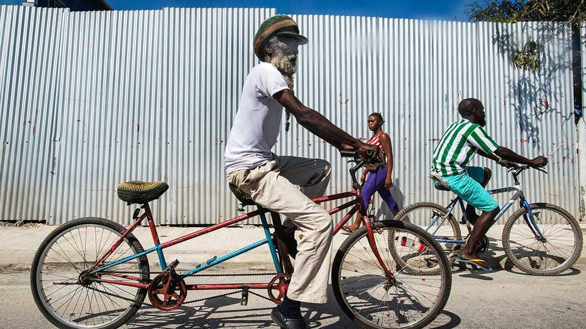

Rastafarians in Jamaica want more rights
The government is keen to atone for past abuses

Oct 22nd 2026
SISTER NANNY is easy to spot. Sporting a red, gold and green dress—with a matching headpiece—the Rastafari campaigner is outlining an idea she thinks will help marginalised members of her faith. Jamaica takes advantage of the world’s interest in Rastas to “attract visitors” to the country, she notes. Yet those same people continue to suffer stigma. She thinks the Jamaican government should share proceeds with the community, whenever it profits from their culture.
Dreadlocks, cannabis, reggae: think of Jamaica and aspects of Rastafari culture commonly leap to mind. On the island, however, the religious movement has often been maligned. Rastafari beliefs originated in poor Jamaican neighbourhoods in the 1930s. They revolve around a single God, Jah, said to reside within each person. Haile Selassie I, the Ethiopian emperor crowned in 1930, is seen by some as the second coming of Christ (Selassie politely discouraged the idea).
From the beginning, authorities took a tough line. Many Rastafari were arrested for possessing cannabis, which they view as a sacrament. Schools and prisons forced them to shave their dreadlocks, which violates a vow. Violence erupted in 1963, following an altercation at a petrol station in the city of Montego Bay. Security forces detained Rastas all across Jamaica; some were killed.
In 2017 the Jamaican government formally apologised for the “Coral Gardens incident”, as it became known. This year it has gone further, formally handing the deeds to land in Montego Bay to a campaign group that Sister Nanny helps organise, as restitution. The land will be used for a Rastafari care home.
The move fits into a broader trend of pro-Rastafari policymaking in the Caribbean. In 2015 Jamaica somewhat liberalised its drug laws, explicitly permitting Rastas to grow and use cannabis for religious purposes. St Vincent & the Grenadines passed a similar rule in 2018; Barbados the following year. When Antigua & Barbuda joined them in 2023, the prime minister, Gaston Browne, acknowledged that his country had once tried to “destroy” the faith. This year St Kitts & Nevis formally recognised Rastafarianism as a religion, which grants it stronger legal protections.
Rastafari in Jamaica say discrimination has decreased, but not disappeared. “The police still harass Rastafari…for having herb,” says Ras Iyah V, chairman of the Westmoreland Hemp and Ganja Farmers’ Association. The movement is pleased with the progress, but it is pushing for more. Sister Nanny’s group has begun advocating for Rastas to get intellectual property rights that might protect “the colours, the language, the food...Anyone who wants to appropriate our culture, then they should pay”. The promise is that funds raised in this way would be used to build schools and more care homes.
Talks with Jamaica’s government continue. A lack of unity hampers the fight. In 2023 several distinct groups formed Rastafari Mansions and Organisations, an umbrella body, to help co-ordinate advocacy. Coherence remains a challenge, says Sister Nanny. “There is no one voice yet.” ■